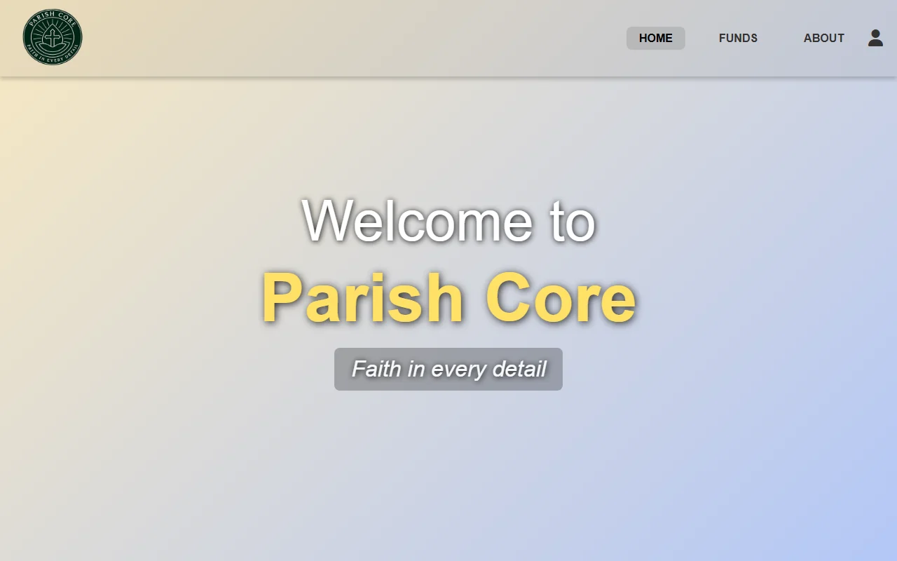
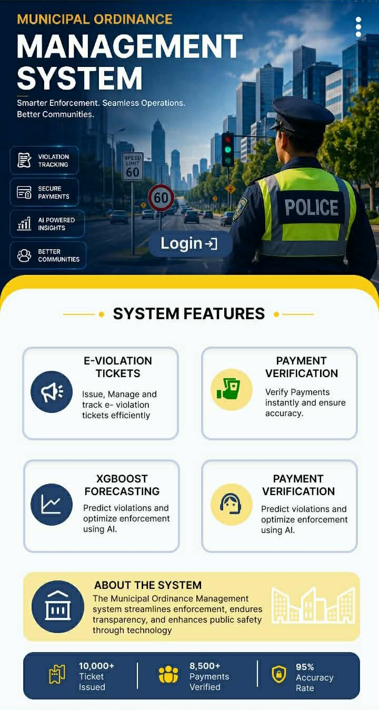
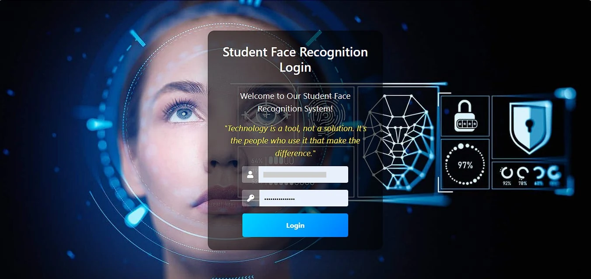

Front-End Development
Clean, semantic HTML, CSS, and JavaScript that turns your design into a fast, working website.
Hi, I am
Front-End Developer | UI Designer
I help people and small brands bring their ideas online through clean code, thoughtful design, and websites that feel good to use.
I'm a front-end developer with an eye for design. I enjoy turning ideas and rough sketches into responsive, accessible websites that feel calm and easy to use.
I work mostly with HTML, CSS, and JavaScript, and I love the space where code meets creativity: choosing the right colors and type, getting the spacing just right, and adding gentle interactions that bring a page to life.
Whether you need a simple landing page, a full website, or a fresh look for something you already have, I'd love to help you make it beautiful.
I sketch every idea on paper before I open my code editor.
Good typography can honestly make my whole day.
Getting the spacing just right is my superpower.
There's always a new color palette saved on my phone.
Learning something new keeps my work fresh.
Small details are where I have the most fun.
Clean, semantic HTML, CSS, and JavaScript that turns your design into a fast, working website.
Wireframes and polished layouts in Figma, with colors and type chosen to suit your brand.
Pages that look and work beautifully on every screen, from phones to large desktops.
A fresh, modern look for your existing site, with clearer content and an easier experience.
What's in my bag
Good code makes a website work, but good design makes people want to stay.
Full-Stack Developer

Web App · My First Website Project
Helps church treasurers record offerings and withdrawals across funds like General, Building, and Mission, with an approval process for treasurers, a full transaction history, and a 5-minute undo window.
UI Designer

UI Design
A Figma design for a system that helps local governments issue and track e-violation tickets, verify payments, and forecast violations using AI, with clear feature cards and a key stats summary.
Developer

Web App
Takes student attendance using face recognition. Faculty can manage student profiles, then search, edit, and review attendance records by student, date, period, and year.
Designer & Developer
Personal Website
The site you're on now: a soft, elegant home for my work, with gentle scroll animations.
Here is what you can expect when we work together, beyond just good code.
I see every project as a chance to make the web a little more beautiful. Let's build something lovely together.
Whether you need a new website, a fresh design, or a developer who cares about the small details, I'd love to hear about your project.